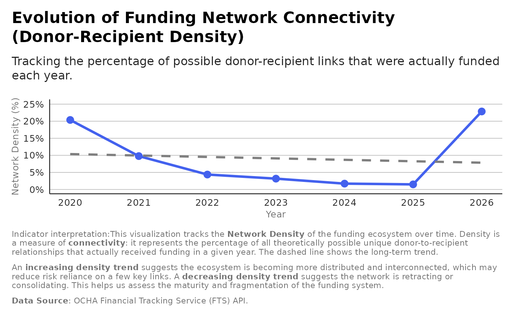

Systemic: Network Density and Granularity Insights
Source:R/analysis_systemic_network_insights.R
analysis_systemic_network_insights.RdCalculates key metrics for the funding network structure, including overall density, density over time (by year), and the granularity (density of core links vs. total links).
Value
A tibble with key network metrics: Overall Density, Density by Year, Core Density, and Granularity.
Examples
result <- analysis_systemic_network_insights(flows)
#> Warning: Using `size` aesthetic for lines was deprecated in ggplot2 3.4.0.
#> ℹ Please use `linewidth` instead.
#> ℹ The deprecated feature was likely used in the ftsAnalysis package.
#> Please report the issue at
#> <https://github.com/edouard-legoupil/ftsAnalysis/issues>.
print(result$plot)
#> `geom_smooth()` using formula = 'y ~ x'
